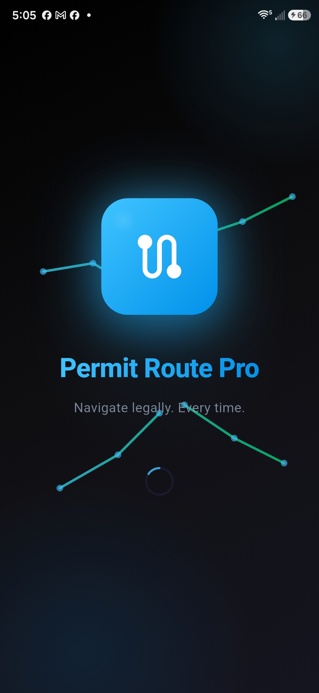
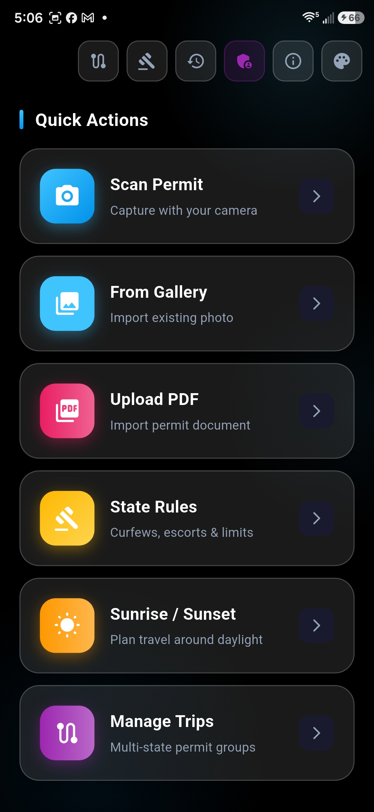
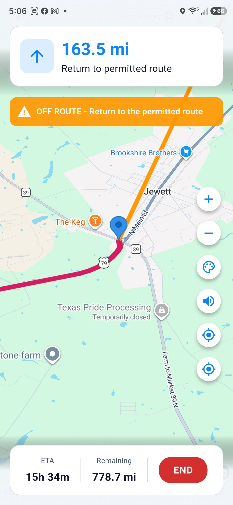
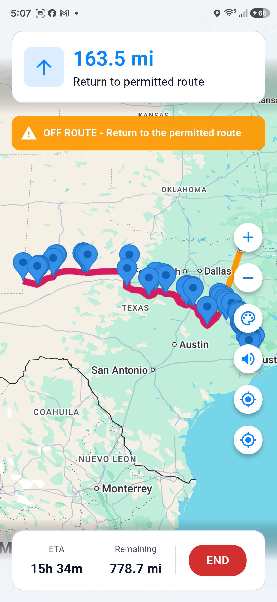

Permit in
Add the original PDF or permit images. The source stays attached to the trip.
Permit Route Pro turns permit language into a map the driver can review, correct, accept, and carry through the full trip.

Approved-route map, current field build
Add the original PDF or permit images. The source stays attached to the trip.
Review extracted roads, turns, origin, destination, and restrictions in plain language.
Compare every waypoint with the permit, make corrections, then store the audit record.
Open the verified trip and navigate along the permit-approved path.
Expect bugs, incomplete features, and limited state support. Access is free for selected testers or $5/month during alpha.
Permit Route Pro processes PDF files more reliably and accurately than camera captures or saved pictures.
Current field bulletin
Release details update automatically whenever a public Android build is published.
Routing coverage legend
Coverage labels describe the current permit-routing implementation, not whether a state permit is valid for travel.
| Full routing support | Texas, Colorado, Virginia, Nevada, Illinois, and New Mexico |
|---|---|
| Partial support | Indiana, South Dakota, and Utah |
| In progress | Arizona, Louisiana, Arkansas, and Oklahoma |
In-progress states include permit extraction and state-data routing integrations for active alpha testing, but are not yet classified as fully supported.
Help chart the next state
Every state writes and formats permits differently. Examples from real trips show us how a state describes roads, turns, restrictions, and special instructions. Permits from states we do not support help us start new coverage; additional examples from supported states help us catch more formats and make existing routing stronger.
Before you upload: remove or cover Social Security numbers, driver’s-license numbers, payment details, signatures, or other private information that is not needed to understand the route. Submit only files you have permission to share.
Submissions are sent privately to permitroutepro@gmail.com. They are used for routing research, not published, and are not requests to route an active trip.
App field views
Six views cover the first action, route verification, approved-map review, and off-route navigation.





Field log
Select a version to review its changes. The newest release opens first.
Loading the complete release history…
Android field setup
This testing build is distributed outside the Play Store. Download it only from this website or the public Permit Route Pro release repository.
Installing on another device?Scan the code with its camera.
Published Checking…. Verify every route against the issued permit.